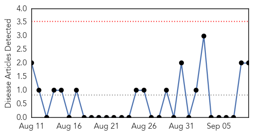
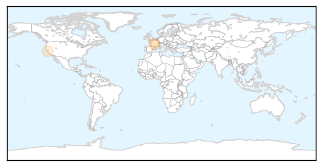
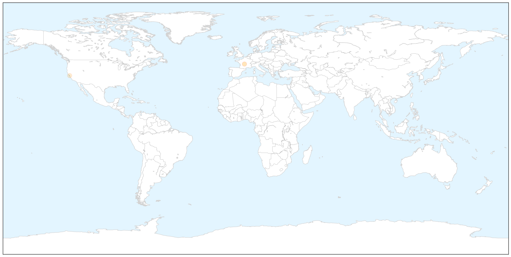
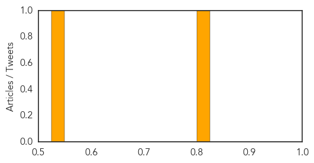
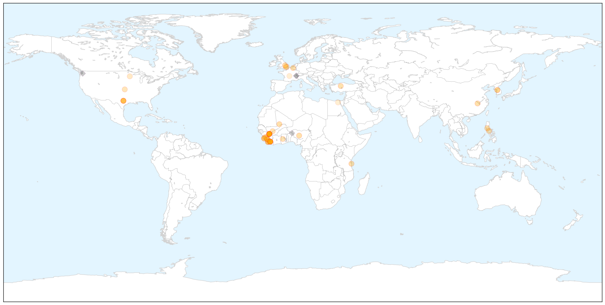

Mold/Fungal
30-Day Web Trend
0 alerts, 0 warnings

30-Day Twitter Trend
0 alerts, 0 warnings

Article Locations

X

Article Confidences
Top Articles:
Top Tweets:
-
No tweets found for Sep 09, 2015
Ebola
30-Day Web Trend
0 alerts, 0 warnings

30-Day Twitter Trend
0 alerts, 0 warnings

Article Locations

X

Article Confidences

Top Articles:
- 1.000
- 3 New Ebola Patients Found in Sierra Leone
- 1.000
- Experts Warn Ebola Outbreak Is ‘Not Finished, by a Long Shot’ — Here’s What Has Them Worried
- 1.000
- Ebola zone countries isolated as airlines stop flights
- 1.000
- World Bank pledges millions to Ebola fight as panic grows
- 1.000
- More Ebola in Sierra Leone as Dallas probe notes missteps
- 1.000
- World Health Organisation (WHO) Declares Liberia Ebola-Free Once Again
- 0.999
- How U.S. Hospitals Are Defending Themselves Against The Next Big Outbreak
- 0.999
- One Year Later, U.S. Nurses Feel Unprepared For The 'Next Ebola'
- 0.999
- One Year Later, U.S. Nurses Feel Unprepared For The ‘Next Ebola’
- 0.998
- Ebola vaccine: Officials weigh who to vaccinate, how much to stockpile
- 0.998
- Local nurse helped tackle ebola outbreak
- 0.997
- Guinea passes one week with no new Ebola case
- 0.996
- Guinea passes one week with no new Ebola case: WHO
- 0.995
- Three new Ebola cases in Sierra Leone quarantine village
- 0.994
- Guinea passes one week with no new Ebola case – WHO
- 0.994
- New Ebola test could help curb disease spread
- 0.993
- Tanzania's ‘Ebola heroes’ honoured - News
- 0.992
- Sierra Leone: WHO Ebola Situation Report - 09 September 2015
- 0.990
- Polio Resurfaces In West Africa, Boy Left Paralyzed Due To Vaccine
- 0.983
- DOH confirms Ebola Reston outbreak among monkeys
- 0.980
- No Ebola Virus Transmission to Date in Liberia
- 0.962
- New Sierra Leone Ebola cases frustrate efforts to end outbreak
- 0.960
- Commonwealth Games Federation refuse to punish Samoa after Sierra Leone banned from Apia 2015 over Ebola
- 0.959
- GeoVax’s Ebola Vaccine Proven Effective In Rodent Models
- 0.939
- Belgian national airline increases flights to west Africa
- 0.931
- Belgian national airline increases flights to west Africa - Xinhua
- 0.929
- Sierra Leone suffers setback as new cases of disease emerge
- 0.925
- New Ebola Cases Emerge in Sierra Leone
- 0.914
- Deputy Health Minister Launches National Family Planning Campaign
- 0.910
- Health Minister Poised to Take COMAHS to Higher Height
- 0.907
- BA stops flights to Liberia, Sierra Leone until 2015 over Ebola
- 0.897
- West and Central Africa Region Weekly Humanitarian Snapshot 1 – 7 September 2015 - Nigeria
- 0.887
- Monkeys in PHL facility test positive for ebola but DOH says no crisis
- 0.872
- Health Minister warns of existence of Ebola
- 0.828
- Desperate need for mental health workers in Sierra Leone
- 0.826
- JFK appeals for Doctors
- 0.817
- Diaspora Liberian Lauds President Sirleaf On Measures To Combat Deadly Ebola Virus
- 0.790
- Medico Gets Media Alliance Award
- 0.782
- Médecins Sans Frontières Awarded Prize
- 0.772
- S. Korea to inject US$100 mln to help poor countries combat infectious diseases
- 0.746
- (LEAD) Park: S. Korea to inject US$100 mln to help poor countries combat infectious diseases
- 0.714
- Welcome to the Expotimes News
- 0.688
- If Ebola Hits Again, This State Is Doing Everything Right
- 0.626
- Chatham House Prize 2015: In Conversation with Dr Joanne Liu of Médecins Sans Frontières
- 0.622
- Ebola is still with us; President warns
- 0.617
- For monitoring outbreaks, disaster…Red Cross gives XL motorbikes to supervisors « Awoko Newspaper
- 0.605
- IMF Managing Director to Visit Liberia
- 0.543
- IMF Managing Director to Visit Liberia
- 0.526
- Ruby B. Johnson crowned Miss Eco Sierra Leone
- 0.517
- IMF Managing Director to Visit Liberia
Showing top 50 articles...
Top Tweets:
- 0.935
- There is NO evidence to show that women who survive Ebola and subsequently become pregnant pose a risk for Ebola virus transmission
- 0.791
- Three New Ebola Patients Found in Sierra Leone - Voice of America http://t.co/xZ78pbtex7 ebola EVD
- 0.663
- Ebola vaccine: Officials weigh who to vaccinate how much to stockpile - Washington Times http://t.co/42n4mxFo7k ebola EVD
- 0.635
- Sierra Leone officials confirm 3 new cases of Ebola http://t.co/mDqftj9HHe
- 0.596
- Sex and masturbation may hamper Ebola eradication efforts - Yahoo News http://t.co/tf3YX5PXe7 ebola EVD
- 0.578
- RT: Ebola virus disease in pregnancy - Guidance http://t.co/Xb2qvOXnzA…